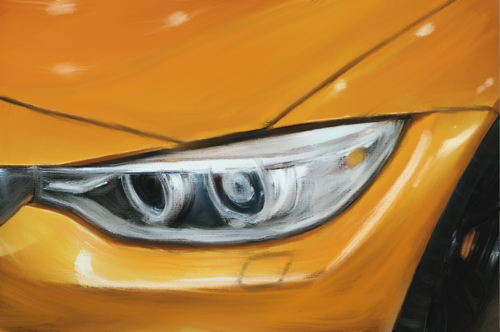

About Myself
These Projects are my first experience with using the adobe lineup, so this is just me scratching the surface of my potential as a graphic designer. My goal is to be an amazing graphic artist and make works of art that people will enjoy and have the potential to immerse them in my art, as a sort of escape from reality, like that of digital media like movies or video games.
